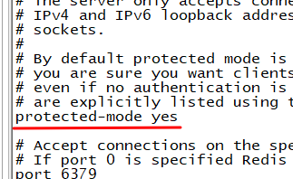
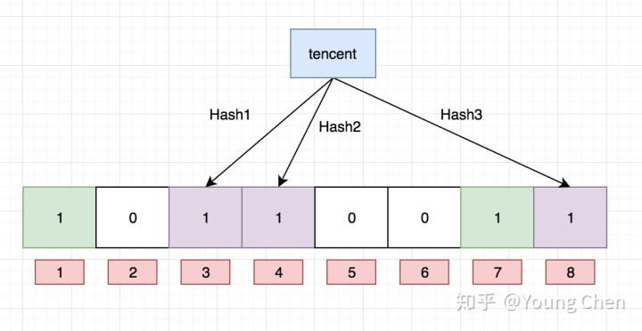
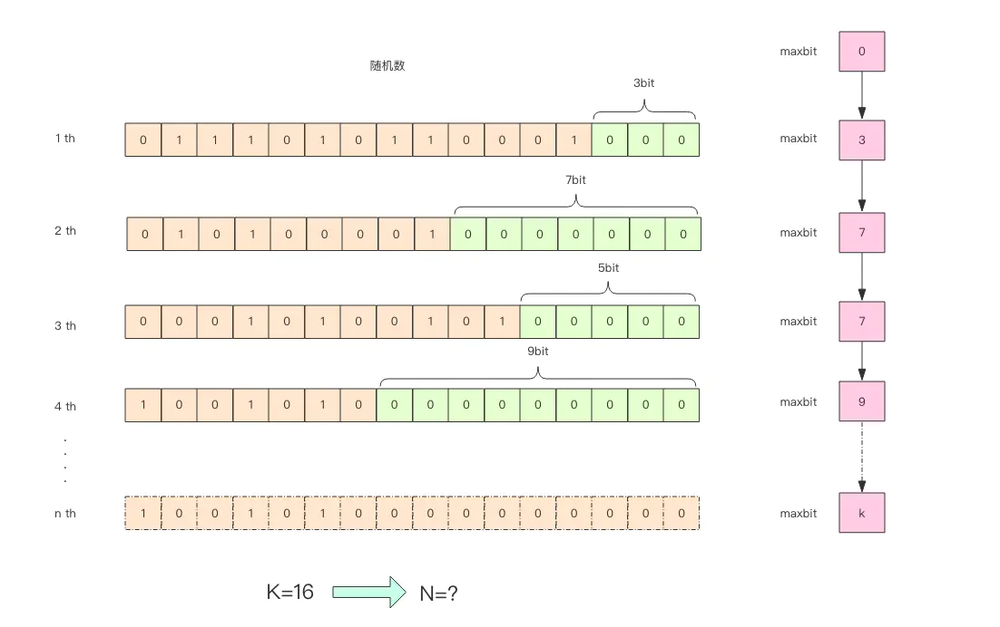
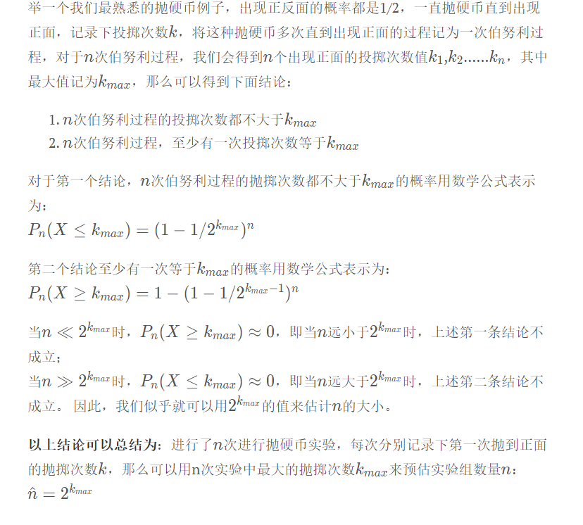
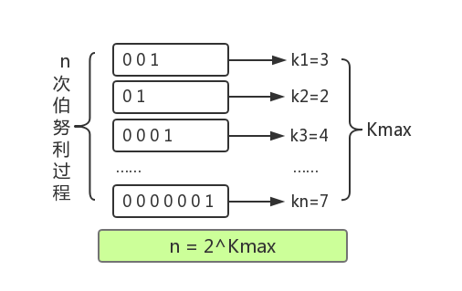

布隆过滤器,位图,HyperLogLog
布隆过滤器
场景
我们在使用新闻客户端看新闻时，它会给我们不停地推荐新的内容，它每次推荐时要去重，去掉那些已经看过的内容。那么推荐系统如何实现推送去重的
你会想到服务器记录了用户看过的所有历史记录，当推荐系统推荐新闻时会从每个用户的历史记录里进行筛选，过滤掉那些已经存在的记录。问题是当用户量很大，每个用户看过的新闻又很多的情况下，这种方式，推荐系统的去重工作在性能上跟的上么？
实际上，如果历史记录存储在关系数据库里，去重就需要频繁地对数据库进行 exists 查询，当系统并发量很高时，数据库是很难扛住压力的。
你可能又想到了缓存，但是如此多的历史记录全部缓存起来，那得浪费多大存储空间啊？而且这个存储空间是随着时间线性增长，你撑得住一个月，你能撑得住几年么？但是不缓存的话，性能又跟不上，这该怎么办？
这时，布隆过滤器 (Bloom Filter) 就是专门用来解决这种去重问题的。它在起到去重的同时，在空间上还能节省 90% 以上
布隆过滤器是什么？
布隆过滤器可以理解为一个不怎么精确的 set 结构，当你使用它的 contains 方法判断某个对象是否存在时，它可能会误判。但是布隆过滤器也不是特别不精确，只要参数设置的合理，它的精确度可以控制的相对足够精确，只会有小小的误判概率。
波隆过滤器是宁可错杀三千，也不放过一人。用判断url是否是在黑名单集合中，如果你是黑名单，那么我肯定将你拦截，如果不是，我可能错杀将你拦截
套在上面的使用场景中，布隆过滤器能准确过滤掉那些已经看过的内容，那些没有看过的新内容，它也会过滤掉极小一部分 (误判)，但是绝大多数新内容它都能准确识别。这样就可以完全保证推荐给用户的内容都是无重复的。
guava和redis中都有布隆过滤器 , 但是guava的布隆过滤器分布式系统没法用，redis可以
安装
bloomfilter是redis的一个插件
https://github.com/RedisBloom/RedisBloom/releases
下载解压后make
make完成之后会有一个redisbloom.so* 的文件
1 | 程序连接之前需要加载下模块 |
远程连接redis需把protected-mode改为no
bind 127.0.0.1注释掉

Redis中布隆过滤器的基本使用
布隆过滤器有二个基本指令，bf.add 添加元素，bf.exists 查询元素是否存在，它的用法和 set 集合的 sadd 和 sismember 差不多。注意 bf.add 只能一次添加一个元素，如果想要一次添加多个，就需要用到 bf.madd 指令。同样如果需要一次查询多个元素是否存在，就需要用到 bf.mexists 指令。
1 | 127.0.0.1:6379> bf.add guahao user1 |
似乎很准确啊，一个都没误判。下面我们java加入很多元素，看看加到第几个元素的时候，布隆过滤器会出现误判。
1 | public static void main(String[] args) { |
执行上面的代码后，发现居然没有输出，塞进去了 100000 个元素，还是没有误判，这是怎么回事？
原因就在于布隆过滤器对于已经见过的元素肯定不会误判，它只会误判那些没见过的元素。所以我们要稍微改一下上面的脚本，使用 bf.exists 去查找没见过的元素，看看它是不是以为自己见过了。
1 | Client client = new Client(); |
运行后，我们看到了输出是 214，也就是到第 214 的时候，它出现了误判。
误判率
测量误判率:先随机出一堆字符串，然后切分为 2 组，将其中一组塞入布隆过滤器，然后再判断另外一组的字符串存在与否，取误判的个数和字符串总量一半的百分比作为误判率。
1 | private String chars; |
输出
1 | total users 100000 |
可以看到误判率大约 1% 多点。你也许会问这个误判率还是有点高啊，有没有办法降低一点？答案是有的。
我们上面使用的布隆过滤器只是默认参数的布隆过滤器，它在我们第一次 add 的时候自动创建。Redis 其实还提供了自定义参数的布隆过滤器，需要我们在 add 之前使用bf.reserve指令显式创建。如果对应的 key 已经存在，bf.reserve会报错。bf.reserve有三个参数，分别是 key, error_rate和initial_size。错误率越低，需要的空间越大。initial_size参数表示预计放入的元素数量，当实际数量超出这个数值时，误判率会上升。
所以需要提前设置一个较大的数值避免超出导致误判率升高。如果不使用 bf.reserve，默认的error_rate是 0.01，默认的initial_size是 100。
接下来我们使用 bf.reserve 改造一下上面的脚本：
1 | private String chars; |
输出:
1 | total users 100000 |
我们看到了误判率大约 0.012%，比预计的 0.1% 低很多，不过布隆的概率是有误差的，只要不比预计误判率高太多，都是正常现象。
布隆过滤器的原理
每个布隆过滤器对应到 Redis 的数据结构里面就是一个大型的位数组和几个不一样的无偏 hash 函数(比较均匀的hash函数)

向布隆过滤器中添加 key 时，会使用多个 hash 函数对 key 进行 hash 算得一个整数索引值然后对位数组长度进行取模运算得到一个位置，每个 hash 函数都会算得一个不同的位置。再把位数组的这几个位置都置为 1 就完成了 add 操作。
例如针对值 “baidu” 和三个不同的哈希函数分别生成了哈希值 1、4、7，则上图转变为：

我们现在再存一个值 “tencent”，如果哈希函数返回 3、4、8 的话，图继续变为

值得注意的是，4 这个 bit 位由于两个值的哈希函数都返回了这个 bit 位，因此它被覆盖了。现在我们如果想查询 “dianping” 这个值是否存在，哈希函数返回了 1、5、8三个值，结果我们发现 5 这个 bit 位上的值为 0，说明没有任何一个值映射到这个 bit 位上(尽管1和8是1)，因此我们可以很确定地说 “dianping” 这个值不存在。 判断某个值是否存在的条件就是三个值都为1
向布隆过滤器询问 key 是否存在时，跟 add 一样，也会把 hash 的几个位置都算出来，看看位数组中这几个位置是否都为 1，只要有一个位为 0，那么说明布隆过滤器中这个 key 不存在。如果都是 1，这并不能说明这个 key 就一定存在，只是极有可能存在，因为这些位被置为 1 可能是因为其它的 key 存在所致。如果这个位数组比较稀疏，判断正确的概率就会很大，如果这个位数组比较拥挤，判断正确的概率就会降低。具体的概率计算公式比较复杂 chj 2020年6月3日16:15:52
但是当我们需要查询 “baidu” 这个值是否存在的话，那么哈希函数必然会返回 1、4、7，然后我们检查发现这三个 bit 位上的值均为 1，那么我们可以说 “baidu” 存在了么？答案是不可以，只能是 “baidu” 这个值可能存在
随着增加的值越来越多，被置为 1 的 bit 位也会越来越多，这样某个值 “taobao” 即使没有被存储过，但是万一哈希函数返回的三个 bit 位都被其他值置位了 1 ，那么程序还是会判断 “taobao” 这个值存在。
布隆过滤器的其它应用
爬虫系统
在爬虫系统中，我们需要对 URL 进行去重，已经爬过的网页就可以不用爬了。但是 URL 太多了，几千万几个亿，如果用一个集合装下这些 URL 地址那是非常浪费空间的。这时候就可以考虑使用布隆过滤器。它可以大幅降低去重存储消耗，只不过也会使得爬虫系统错过少量的页面。
nosql
布隆过滤器在 NoSQL 数据库领域使用非常广泛，我们平时用到的 HBase、Cassandra 还有 LevelDB、RocksDB 内部都有布隆过滤器结构，布隆过滤器可以显著降低数据库的 IO 请求数量。当用户来查询某个 row 时，可以先通过内存中的布隆过滤器过滤掉大量不存在的 row 请求，然后再去磁盘进行查询。
垃圾邮件过滤
邮箱系统的垃圾邮件过滤功能也普遍用到了布隆过滤器，因为用了这个过滤器，所以平时也会遇到某些正常的邮件被放进了垃圾邮件目录中，这个就是误判所致，概率很低。
防止缓存击穿
如果每次都查询一个不存在value的key，由于缓存中没有数据，所以每次都会去查询数据库；当对key查询的并发请求量很大时，每次都访问DB，很可能对DB造成影响；并且由于缓存不命中，每次都查询持久层，那么也失去了缓存的意义。
解决方法:
第一种是缓存层缓存空值
将数据库中的空值也缓存到缓存层中，这样查询该空值就不会再访问DB，而是直接在缓存层访问就行。
但是这样有个弊端就是缓存太多空值占用了更多的空间，可以通过给缓存层空值设立一个较短的过期时间来解决，例如60s。
第二种是布隆过滤器
将数据库中所有的查询条件，放入布隆过滤器中，
当一个查询请求过来时，先经过布隆过滤器进行查，如果判断请求查询值存在，则继续查；如果判断请求查询不存在，直接丢弃。
优缺点
优缺点与用途
BF的优点是显而易见的：
- 不需要存储数据本身，只用比特表示，因此空间占用相对于传统方式有巨大的优势，并且能够保密数据；
- 时间效率也较高，插入和查询的时间复杂度均为O(k)；
- 哈希函数之间相互独立，可以在硬件指令层面并行计算。
但是，它的缺点也同样明显：
- 存在假阳性的概率，不适用于任何要求100%准确率的情境；
- 只能插入和查询元素，不能删除元素(适合历史记录)，这与产生假阳性的原因是相同的。我们可以简单地想到通过计数（即将一个比特扩展为计数值）来记录元素数，但仍然无法保证删除的元素一定在集合中。
所以，BF在对查准度要求没有那么苛刻，而对时间、空间效率要求较高的场合非常合适
HyperLogLog
如果你负责开发维护一个大型的网站，有一天老板找产品经理要网站每个网页每天的 UV 数据，然后让你来开发这个统计模块，你会如何实现？
如果统计 PV 那非常好办，给每个网页一个独立的 Redis 计数器就可以了，这个计数器的 key 后缀加上当天的日期。这样来一个请求，incrby 一次，最终就可以统计出所有的 PV 数据。
但是 UV 不一样，它要去重，同一个用户一天之内的多次访问请求只能计数一次。这就要求每一个网页请求都需要带上用户的 ID，无论是登陆用户还是未登陆用户都需要一个唯一 ID 来标识。
你也许已经想到了一个简单的方案，那就是为每一个页面一个独立的 set 集合来存储所有当天访问过此页面的用户 ID。当一个请求过来时，我们使用 sadd 将用户 ID 塞进去就可以了。通过 scard 可以取出这个集合的大小，这个数字就是这个页面的 UV 数据。没错，这是一个非常简单的方案。
但是，如果你的页面访问量非常大，比如一个爆款页面几千万的 UV，你需要一个很大的 set 集合来统计，这就非常浪费空间。如果这样的页面很多，那所需要的存储空间是惊人的。为这样一个去重功能就耗费这样多的存储空间，值得么？其实老板需要的数据又不需要太精确，105w 和 106w 这两个数字对于老板们来说并没有多大区别，So，有没有更好的解决方案呢？
这就是本节要引入的一个解决方案，Redis 提供了 HyperLogLog 数据结构就是用来解决这种统计问题的。HyperLogLog 提供不精确的去重计数方案，虽然不精确但是也不是非常不精确，标准误差是 0.81%，这样的精确度已经可以满足上面的 UV 统计需求了。
HyperLogLog 数据结构是 Redis 的高级数据结构，它非常有用
使用方法
HyperLogLog 提供了两个指令 pfadd 和 pfcount，根据字面意义很好理解，一个是增加计数，一个是获取计数。pfadd 用法和 set 集合的 sadd 是一样的，来一个用户 ID，就将用户 ID 塞进去就是。pfcount 和 scard 用法是一样的，直接获取计数值。
1 | 127.0.0.1:6379> pfadd codehole user1 |
注意事项
HyperLogLog 这个数据结构不是免费的，不是说使用这个数据结构要花钱，它需要占据一定 12k 的存储空间，所以它不适合统计单个用户相关的数据。如果你的用户上亿，可以算算，这个空间成本是非常惊人的。但是相比 set 存储方案，HyperLogLog 所使用的空间那真是可以使用千斤对比四两来形容了。
不过你也不必过于担心，因为 Redis 对 HyperLogLog 的存储进行了优化，在计数比较小时，它的存储空间采用稀疏矩阵存储，空间占用很小，仅仅在计数慢慢变大，稀疏矩阵占用空间渐渐超过了阈值时才会一次性转变成稠密矩阵，才会占用 12k 的空间。
基数计数方法
B树
B树最大的优势是插入和查找效率很高，如果用B树存储要统计的数据，可以快速判断新来的数据是否已经存在，并快速将元素插入B树。要计算基数值，只需要计算B树的节点个数。 将B树结构维护到内存中，可以快速统计和计算，但依然存在问题，B树结构只是加快了查找和插入效率，并没有节省存储内存。例如要同时统计几万个链接的UV，每个链接的访问量都很大，如果把这些数据都维护到内存中，实在是够呛。
bitmap
bitmap可以理解为通过一个bit数组来存储特定数据的一种数据结构，每一个bit位都能独立包含信息，bit是数据的最小存储单位，因此能大量节省空间，也可以将整个bit数据一次性load到内存计算。 如果定义一个很大的bit数组，基数统计中每一个元素对应到bit数组的其中一位，例如bit数组 001101001001101001代表实际数组[2,3,5,8][2,3,5,8]。新加入一个元素，只需要将已有的bit数组和新加入的数字做按位或 (or)(o**r)计算。bitmap中1的数量就是集合的基数值。
bitmap有一个很明显的优势是可以轻松合并多个统计结果，只需要对多个结果求异或就可以。也可以大大减少存储内存，可以做个简单的计算，如果要统计1亿个数据的基数值，大约需要内存： 100000000/8/1024/1024 \approx≈ 12M
如果用32bit的int代表每个统计数据，大约需要内存：
32*100000000/8/1024/1024 \approx≈ 381M
bitmap对于内存的节约量是显而易见的，但还是不够。统计一个对象的基数值需要12M，如果统计10000个对象，就需要将近120G了，同样不能广泛用于大数据场景。
概率算法
实际上目前还没有发现更好的在大数据场景中准确计算基数的高效算法，因此在不追求绝对准确的情况下，使用概率算法算是一个不错的解决方案。概率算法不直接存储数据集合本身，通过一定的概率统计方法预估基数值，这种方法可以大大节省内存，同时保证误差控制在一定范围内。目前用于基数计数的概率算法包括:
- Linear Counting(LC)：早期的基数估计算法，LC在空间复杂度方面并不算优秀，实际上LC的空间复杂度与上文中简单bitmap方法是一样的（但是有个常数项级别的降低），都是
O(N_{max})O(Nmax)； - LogLog Counting(LLC)：LogLog Counting相比于LC更加节省内存，空间复杂度只有
O(log_2(log_2(N_{max})))O(log2(log2(Nmax))) - HyperLogLog Counting(HLL)\：HyperLogLog Counting是基于LLC的优化和改进，在同样空间复杂度情况下，能够比LLC的基数估计误差更小。
下面将着重讲HLL的原理和计算过程。
HyperLogLog的惊人表现
上面我们计算过用bitmap存储1一亿个统计数据大概需要12M内存；而在HLL中，只需要不到1K内存就能做到；redis中实现的HyperLogLog，只需要12K内存，在标准误差0.81%的前提下，能够统计2^{64}264个数据。首先容我感叹一下数学的强大和魅力，那么概率算法是怎样做到如此节省内存的，又是怎样控制误差的呢？
首先简单展示一下HLL的基本做法，HLL中实际存储的是一个长度为mm的大数组SS，将待统计的数据集合划分成mm组，每组根据算法记录一个统计值存入数组中。数组的大小mm由算法实现方自己确定，redis中这个数组的大小是16834，mm越大，基数统计的误差越小，但需要的内存空间也越大。
这里有个HLL demo可以看一下HLL到底是怎么做到这种超乎想象的事情的。
HyperLogLog 原理
HyperLogLog 的使用非常简单，但是实现原理比较复杂
为了方便理解 HyperLogLog 的内部实现原理

这张图的意思是，给定一系列的随机整数，我们记录下低位连续零位的最大长度 k，通过这个 k 值可以估算出随机数的数量。
先不问为什么，写个程序跑一下 HLLTest

可以通过一组小实验验证一下这种估计方法是否基本合理。
回到基数统计的问题，我们需要统计一组数据中不重复元素的个数，集合中每个元素的经过hash函数后可以表示成0和1构成的二进制数串，一个二进制串可以类比为一次抛硬币实验，1是抛到正面，0是反面。二进制串中从低位开始第一个1出现的位置可以理解为抛硬币试验中第一次出现正面的抛掷次数k，那么基于上面的结论，我们可以通过多次抛硬币实验的最大抛到正面的次数来预估总共进行了多少次实验，同样可以可以通过第一个1出现位置的最大值 K(max)来预估总共有多少个不同的数字（整体基数）。
这种通过局部信息预估整体数据流特性的方法似乎有些超出我们的基本认知，需要用概率和统计的方法才能推导和验证这种关联关系。HyperLogLog核心在于观察集合中每个数字对应的比特串，通过统计和记录比特串中最大的出现1的位置来估计集合整体的基数，可以大大减少内存耗费。
现在回到第二节中关于HyperLogLog的第一个疑问，为什么要统计hash值中第一个1出现的位置？
第一个1出现的位置可以类比为抛硬币实验中第一次抛到正面的抛掷次数，根据抛硬币实验的结论，记录每个数据的第一个出现的位置k，就可以通过其中最大值K(max)推导出数据集合的基数：

分桶平均
HLL的基本思想是利用集合中数字的比特串第一个1出现位置的最大值来预估整体基数，但是这种预估方法存在较大误差，为了改善误差情况，HLL中引入分桶平均的概念。
同样举抛硬币的例子，如果只有一组抛硬币实验，运气较好，第一次实验过程就抛了10次才第一次抛到正面，显然根据公式推导得到的实验次数的估计误差较大；如果100个组同时进行抛硬币实验，同时运气这么好的概率就很低了，每组分别进行多次抛硬币实验，并上报各自实验过程中抛到正面的抛掷次数的最大值，就能根据100组的平均值预估整体的实验次数了。
分桶平均的基本原理是将统计数据划分为mm个桶，每个桶分别统计各自的K(max)并能得到各自的基数预估值 n ，最终对这些 n求平均得到整体的基数估计值。LLC中使用几何平均数预估整体的基数值，但是当统计数据量较小时误差较大；HLL在LLC基础上做了改进，采用调和平均数，调和平均数的优点是可以过滤掉不健康的统计值，具体的计算公式为：
回到第二节中关于HLL的第二个疑问，为什么要有分桶数组 ？分桶数组是为了消减因偶然性带来的误差，提高预估的准确性。那么分桶数组的大小怎么确定呢？
这是由算法实现方自己设定的，例如上面HLL demo中，设定统计数组的大小，如果函数得到的比特串是32位，需要其中6()位定位分桶数组中的桶的位置，还剩下26位（需要记录的出现1的位置的最大值是26），那么数组中每个桶需要5()位记录1第一次出现的位置，整个统计数组需要花费的内存为：
也就是用32bit的内存能够统计的基数数量为。
这里有个HLL demo可以看一下HLL到底是怎么做到这种超乎想象的事情的。
http://content.research.neustar.biz/blog/hll.html
公式推导： https://www.slideshare.net/KaiZhang130/countdistinct-problem-88329470
位图
场景1：用户日活，月活，留存统计
场景2： 实现用户上线次数的统计
场景3 ：用户在线状态和人数统计
在我们平时开发过程中，会有一些 bool 型数据需要存取，比如用户一年的签到记录，签了是 1，没签是 0，要记录 365 天。如果使用普通的 key/value，每个用户要记录 365 个，当用户上亿的时候，需要的存储空间是惊人的。
为了解决这个问题，Redis 提供了位图数据结构，这样每天的签到记录只占据一个位(bit)，365 天就是 365 个位，46 个字节(byte) (一个稍长一点的字符串) 就可以完全容纳下，这就大大节约了存储空间。

位图不是特殊的数据结构，它的内容其实就是普通的字符串，也就是 byte 数组。我们可以使用普通的 get/set 直接获取和设置整个位图的内容，也可以使用位图操作 getbit/setbit 等将 byte 数组看成「位数组」来处理。
当我们要统计月活的时候，因为需要去重，需要使用 set 来记录所有活跃用户的 id，这非常浪费内存。这时就可以考虑使用位图来标记用户的活跃状态。每个用户会都在这个位图的一个确定位置上，0 表示不活跃，1 表示活跃。然后到月底遍历一次位图就可以得到月度活跃用户数。不过这个方法也是有条件的，那就是 userid 是整数连续的，并且活跃占比较高，否则可能得不偿失。
如果你对 Redis 的位图有所了解，它将会是你的面试加分项。
关于位图，可能大家不太熟悉，
那么位图能干啥呢？位图的内容其实就是普通的字符串，也就是byte数组，我们都知道
byte = 8 位无符号整数 = 0 到 255
说个场景。比如你处理一些业务时候，往往会存在 是或者不是 这样的数据，那么这种数据还是频繁去查看和请求，从数据方面和请求次数方面都是非常的大的。那么Redis位图可以帮你解决。每天的记录只占据一个位，他的存储格式：0 1 0 1 0 1。在操作方面我们可以使用：get/set， gitbit/setbit等将byte数组看成【位数组】来处理。
说说他的特性：
位数组是自动扩展的，如果超出现有内容范围，它会自动将位数组进行零扩充。
当然一般这种业务数据，都往往少不了统计，查找，那么位图指令统计bitcount和查找bitpos。bitcount 用来统计指定位置范围内 1 的个数，bitpos 用来查找指定范围内出现的第一个 0 或 1。
bitpos指定的范围是【start，end】。注意的是start 和 end 参数是字节索引，也就是说指定的位范围必须是 8 的倍数，
setbit命令
设置或修改key上的偏移量（offset）的位（value）的值。
- 语法：
setbit key offset value - 返回值：指定偏移量
（offset）原来存储的值

getbit命令
查询key所存储的字符串值，获取偏移量上的位。
- 语法：
getbit key offset - 返回值：返回指定
key上的偏移量，若key不存在，那么返回0。

getcount命令
计算给定key的字符串值中，被设置为1的位bit的数量
- 语法：
bitcount key [start] [end] - 返回值：1比特位的数量
注意：setbit是设置或者清除bit位置。这个是统计key出现1的次数。
（友情提示：）需要注意的是：[start][end]（单位）实际是byte，这是什么意思呢？进入redis实际上是乘以8。
场景
用户日活，月活，留存率的统计
实际是统计每天的用户数量。
- key：日期；
- offset：用户id【数字或者二进制】；要求用户id连续
- value：是否登录/做任意操作；
按日期生成一个位图（bitmap）
- 计算日活：
bitcount key获取key为1的数量； - 计算月活：可把30天的所有
bitmap做or计算，在进行bitcount计算； - 计算留存率：
昨日留存=昨天今天连续登录的人数/昨天登录的人数，即昨天的bitmap与今天的bitmap进行and计算，在除以昨天bitcount的数量
实现用户上线次数的统计
实际上是以用户为主体
- key：用户id；
- offset：日期；
- value：是否上线；
setbit xiaopang 1 0；记录小胖的上线天数，bitcount xiaopang统计小胖的上线天数。
用户在线状态和人数统计
也是使用一个bitmap，使用用户id来充当offset，上线标识是1，下线标识是0，也可轻松统计在线人数。
优点
位图操作是用来操作比特位的，其优点是节省内存空间。为什么可以节省内存空间呢？假如我们需要存储100万个用户的登录状态，使用位图的话最少只需要100万个比特位（比特位1表示登录，比特位0表示未登录）就可以存储了，而如果以字符串的形式存储，比如说以userId为key，是否登录（字符串“1”表示登录，字符串“0”表示未登录）为value进行存储的话，就需要存储100万个字符串了，相比之下使用位图存储占用的空间要小得多，这就是位图存储的优势。
参考
https://github.com/RedisBloom/JRedisBloom/issues/11
https://www.cnblogs.com/fu-yong/p/9629090.html
https://zhuanlan.zhihu.com/p/43263751
https://krisives.github.io/bloom-calculator/ 布隆计算器
https://www.cnblogs.com/luxianyu-s/p/12686466.html
https://www.cnblogs.com/allensun/archive/2011/02/16/1956532.html
https://github.com/antirez/redis/blob/unstable/src/hyperloglog.c